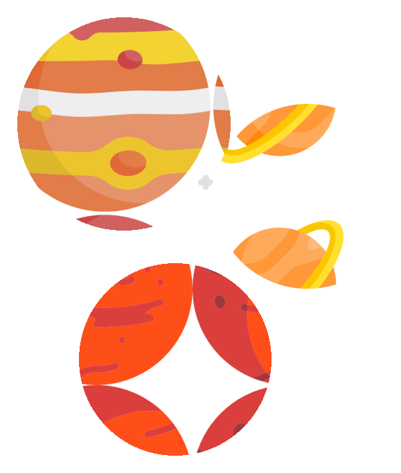

En una galaxia muy, muy lejana, un grupo de exploradores descubrió un
planeta habitado por seres muy especiales: niños pequeños con una
curiosidad e imaginación inigualable. Fascinados por la comida que
comían, decidieron crear un restaurante espacial para niños.
Los exploradores trabajaron duro para crear el menú más emocionante y
creativo que pudieron imaginar. Utilizaron ingredientes de diferentes
planetas y galaxias para crear platillos únicos que despertaran la
imaginación de los niños. Y así nació el Restaurante Espacial para
Niños.
Desde entonces, el restaurante ha sido un gran éxito en toda la galaxia.
Los niños disfrutan de su visita al restaurante como si estuvieran en
una verdadera aventura espacial, y los padres están felices de ver a sus
hijos disfrutar de comidas saludables y divertidas. El Restaurante
Espacial para Niños continúa creciendo y expandiéndose por toda la
galaxia, llevando alegría y diversión a pequeños comensales en todos los
rincones del universo.